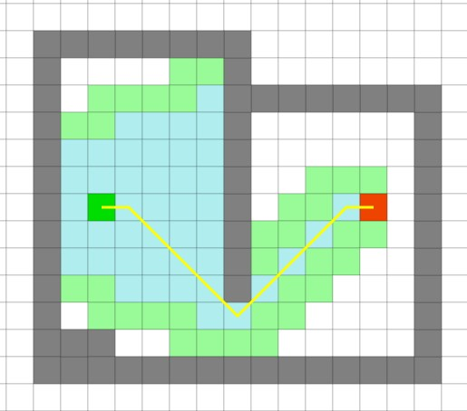
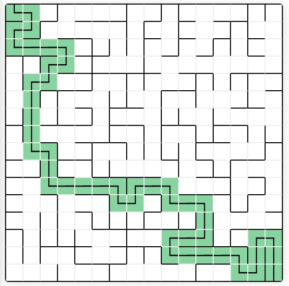
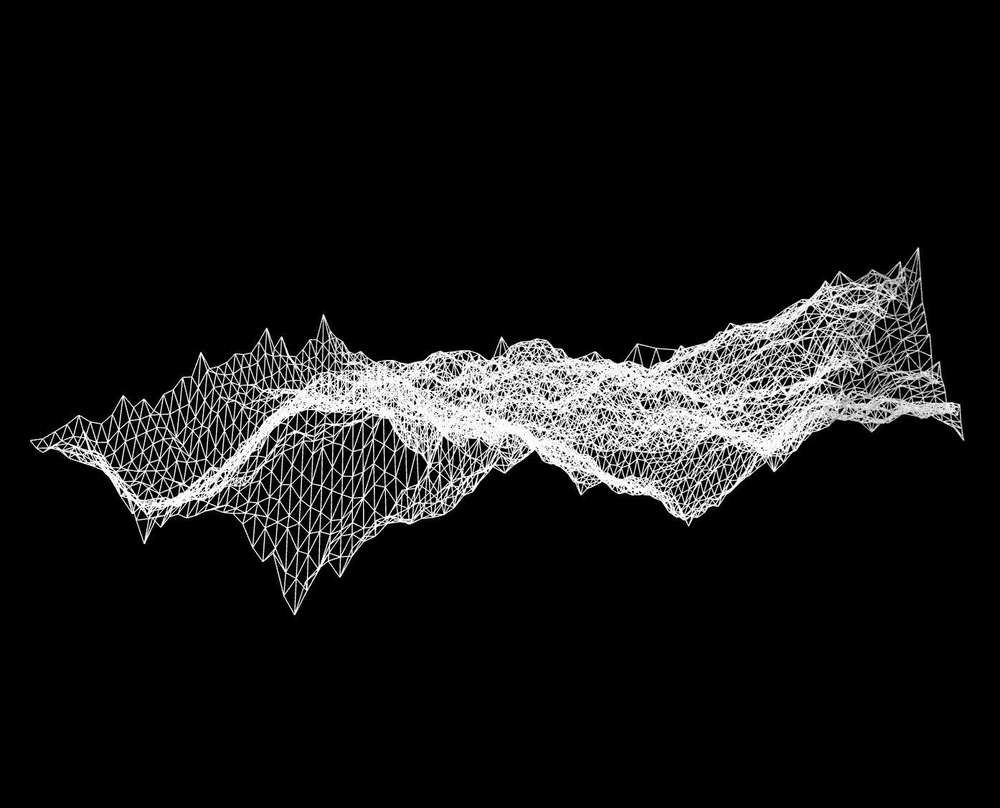
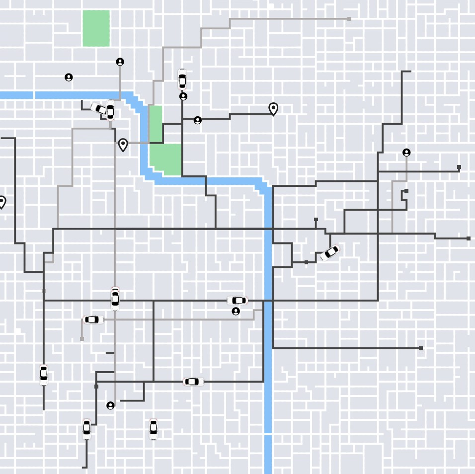
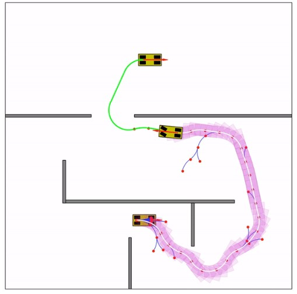

| Pic | Source Code | Demo | Stack | Description |
|---|---|---|---|---|
|  | Source Code | Demo | JavaScript | A comprehensive path-finding library for grid based games |
|  | Source Code | Demo | JavaScript | A maze solver |
|  | Source Code | Demo | JavaScript | A random fractal terrain generator in JavaScript |
|  | Source Code | Demo | Go, JavaScript | PA full-stack simulation of a ridesharing app with metrics and graphics |
|  | Source Code | Demo | Python | Path planning using Hybrid A*/RRT + Dubins Path (as final shot). |